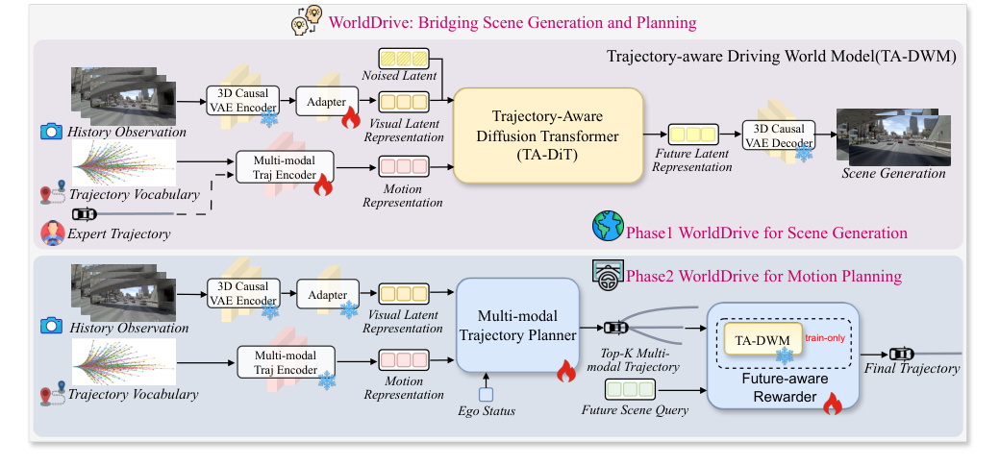
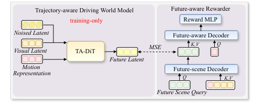
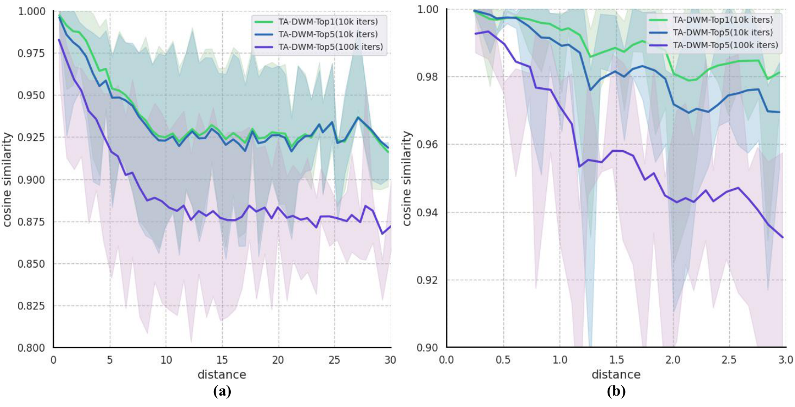
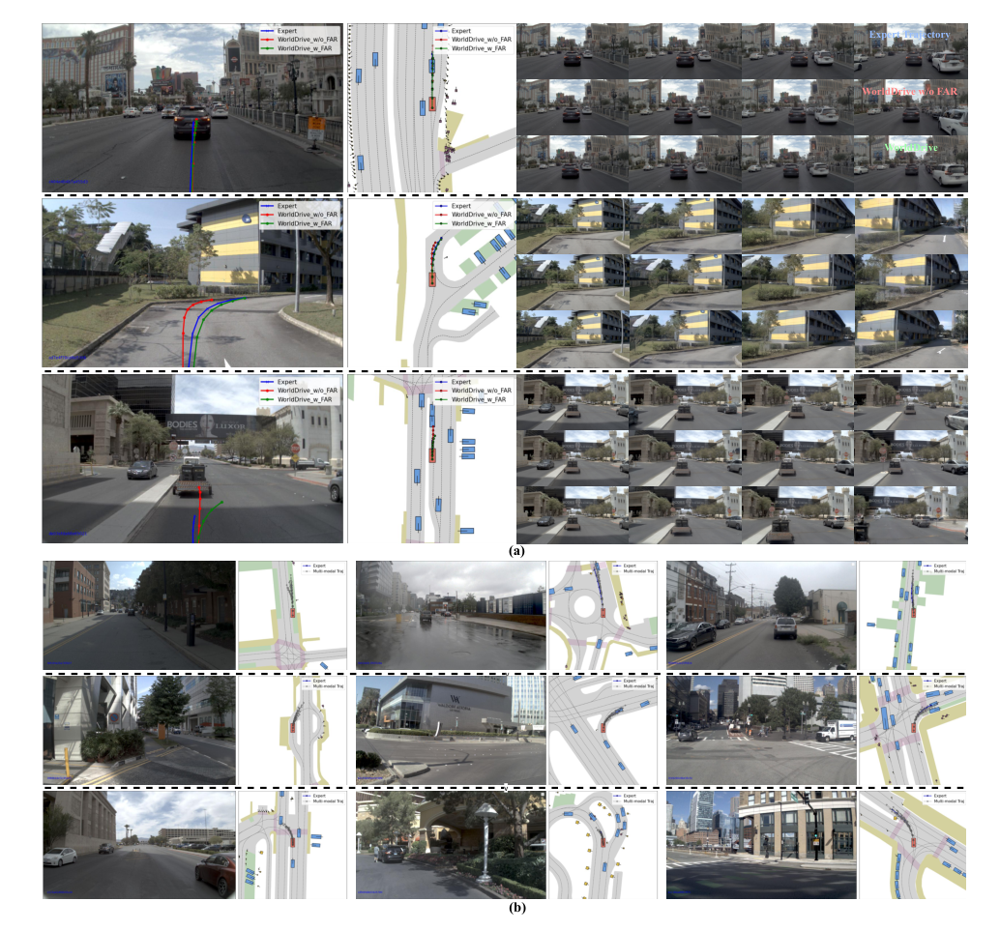
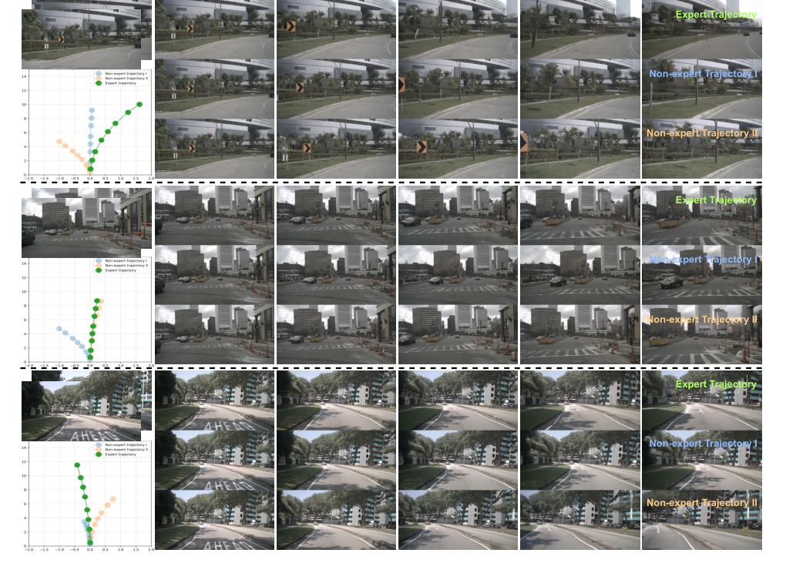

Bridging
简单摘要
至关重要的是，我们发现这两种策略都存在系统性局限性。为了弥补这一差距，我们引入了 WorldDrive，这是一个整体框架，旨在通过统一视觉和运动表示来协同端到端规划与场景生成。

至关重要的是，我们发现这两种策略都存在系统性局限性。为了弥补这一差距，我们引入了 WorldDrive，这是一个整体框架，旨在通过统一视觉和运动表示来协同端到端规划与场景生成。
核心创新
第一个关键新意是：我们首先引入轨迹感知驾驶世界模型，该模型以轨迹词汇为条件，以增强视觉动态和运动意图之间的一致性。这部分不是单独的小修小补，而是在原论文方法链路里承担了明确作用。
第二个关键新意是：此外，为了利用世界模型的远见，我们提出了一个未来感知奖励器，它从冻结的世界模型中提取未来的潜在表示，以实时评估和选择最佳轨迹。这部分不是单独的小修小补，而是在原论文方法链路里承担了明确作用。
第三个关键新意是：我们首先通过对大量驾驶日志进行聚类来构建轨迹词汇，其中每个基元充当运动锚点。这部分不是单独的小修小补，而是在原论文方法链路里承担了明确作用。
第四个关键新意是：为了规避这一瓶颈，同时保留预测性远见的优势，我们提出了未来感知奖励器（FAR）。这部分不是单独的小修小补，而是在原论文方法链路里承担了明确作用。
技术细节
通过注意力机制，规划器聚合每个潜在运动原语的相关环境背景。该策略确保生成涵盖各种可能行为的多样化轨迹分布，从而为后续的未来感知奖励模块提供全面的轨迹候选集。为了规避这一瓶颈，同时保留预测性远见的优势，我们提出了未来感知奖励器（FAR）。
进一步设计了一个具有未来意识的奖励器，以从候选者中选择最佳轨迹。
3.1 轨迹感知驾驶世界模型
我们首先通过对大量驾驶日志进行聚类来构建轨迹词汇，其中每个基元充当运动锚点。由此产生的嵌入作为扩散模型的条件。TA-DiT 旨在根据历史背景和运动意图生成未来潜在变量。
$$ c = \mathcal{E}_{a}(\mathcal{V}_K) + \mathcal{E}_{o}(Y - \mathcal{V}_K), $$
这条式子是在定义一个可直接计算的中间量：右侧把相对位置、方向、权重或比例关系组合起来，左侧则把这个组合结果记成后续模块要反复使用的变量。
3.2 多模态轨迹规划器
我们将完整的预定义锚嵌入视为查询。通过注意力机制，规划器聚合每个潜在运动原语的相关环境背景。该策略确保生成涵盖各种可能行为的多样化轨迹分布，从而为后续的未来感知奖励模块提供全面的轨迹候选集。

$$ Q_{p} = \mathcal{D}_{\text{plan}}(Q_{a}, [f, e], [f, e]), $$
放在“方法”这一部分看，它重点在定义或约束 Q p 这一项。这条式子给出了论文中的一条核心计算关系。理解时重点看左侧最终输出是什么，以及右侧各部分分别承担什么作用。
3.3 与具有未来意识的奖励者一起驾驶
虽然 TA-DWM 可以合成每个候选轨迹的未来潜伏，但对所有候选轨迹执行完整的去噪过程在计算上对于实时规划来说是令人望而却步的。为了规避这一瓶颈，同时保留预测性远见的优势，我们提出了未来感知奖励器（FAR）。最后，MLP 映射到标量奖励 ，我们选择奖励最高的轨迹。
$$ \hat{z}^k = \mathcal{D}_{\text{scene}}(Q_{s}, [f, c^k], [f, c^k]). $$
放在“方法”这一部分看，它重点在定义或约束 z k 这一项。这条式子给出了论文中的一条核心计算关系。理解时重点看左侧最终输出是什么，以及右侧各部分分别承担什么作用。
$$ h_{f}^k = \mathcal{D}_{\text{future}}(c^k, \hat{z}^k, \hat{z}^k), $$
放在“方法”这一部分看，它重点在定义或约束 h f k 这一项。这条式子给出了论文中的一条核心计算关系。理解时重点看左侧最终输出是什么，以及右侧各部分分别承担什么作用。
3.4 训练损失
我们采用解耦的两阶段训练课程来确保视频扩散变压器和规划模块的稳定收敛。第一阶段专门专注于优化 TA-DWM，以学习以历史背景和专家动作为条件的潜在动态。在第二阶段，我们冻结世界模型并优化多模态轨迹规划器。
| Method | Sensors | WM-Based | NC | DAC | TTC | Comf. | EP | PDMS |
|---|---|---|---|---|---|---|---|---|
| TransFuser | MV & L | 97.7 | 92.8 | 92.8 | 100.0 | 79.2 | 84.0 | |
| Hydra-MDP | MV & L | 98.3 | 96.0 | 94.6 | 100.0 | 78.7 | 86.5 | |
| DiffusionDrive | MV & L | 98.2 | 96.2 | 94.7 | 100.0 | 82.2 | 88.1 | |
| WoTE | MV & L | 98.5 | 96.8 | 94.9 | 99.9 | 81.9 | 88.3 | |
| UniAD | MV | 97.8 | 91.9 | 92.9 | 100.0 | 78.8 | 83.4 | |
| PARA-Drive | MV | 97.9 | 92.4 | 93.0 | 99.8 | 79.3 | 84.0 | |
| LAW | MV | 96.4 | 95.4 | 88.7 | 99.9 | 81.7 | 84.6 | |
| World4Drive | MV | 97.4 | 94.3 | 92.8 | 100.0 | 79.9 | 85.1 | |
| FSDrive | MV | 98.2 | 93.8 | 93.3 | 99.9 | 80.1 | 85.1 |
| Method | Sensors | Stage | NC | DAC | DDC | TLC | EP | TTC | LK | HC | EC | EPDMS |
|---|---|---|---|---|---|---|---|---|---|---|---|---|
| LTF | MV | S1 | ||||||||||
| S2 | 96.2 | |||||||||||
| 77.7 | 79.5 | |||||||||||
| 70.2 | 99.1 | |||||||||||
| 84.2 | 99.5 | |||||||||||
| 98.0 | 84.1 | |||||||||||
| 85.1 | 95.1 | |||||||||||
| 75.6 | 94.2 | |||||||||||
| 45.4 | 97.5 | |||||||||||
| Method | Sensors | L2 (m) | CR (%) | ||
|---|---|---|---|---|---|
| 3s | Avg. | 3s | Avg. | ||
| UniAD | V | 1.04 | 0.73 | 0.63 | 0.61 |
| VAD | V | 1.05 | 0.72 | 0.43 | 0.21 |
| SparseDrive | V | 0.96 | 0.61 | 0.18 | 0.08 |
| LAW | V | 1.01 | 0.61 | 0.54 | 0.30 |
| World4Drive | V | 0.81 | 0.50 | 0.33 | 0.16 |
| Drive-WM | V | 1.20 | 0.80 | 0.48 | 0.26 |
| Epona | SV | 1.98 | 1.25 | 0.85 | 0.36 |
| WorldDrive | SV | 0.68 | 0.42 | 0.38 | 0.16 |
$$ \mathcal{L}_{\text{world}} = \mathbb{E}_{z_0, t, \epsilon} [ \| {\epsilon} - \epsilon_\theta(z_t; f, t, c) \|^2_2 ], $$
这条式子给出了噪声预测训练目标：模型在随机时间步接收带噪输入和条件信息，然后尽量把真实噪声估计准确。训练好这一项之后，反向采样时才能稳定地把噪声状态一步步拉回真实场景分布。
$$ \mathcal{L}_{\text{align}} = \mathbb{E}_{k} [ \| \hat{z}^k - \text{SG}(z^k) \|^2_2 ], $$
放在“方法”这一部分看，它重点在定义或约束 L align 这一项。这条式子给出了噪声预测训练目标：模型在随机时间步接收带噪输入和条件信息，然后尽量把真实噪声估计准确。训练好这一项之后，反向采样时才能稳定地把噪声状态一步步拉回真实场景分布。
$$ \mathcal{L}_{\text{reward}} = - \mathbb{E}_{(v_{\text{pos}}, v_{\text{neg}})\sim\hat{\mathcal{V}}_K } [ \log \sigma ( r_{\text{pos}} - r_{\text{neg}} ) ], $$
放在“方法”这一部分看，它重点在定义或约束 L reward 这一项。这条式子是在定义一个可直接计算的中间量：右侧把相对位置、方向、权重或比例关系组合起来，左侧则把这个组合结果记成后续模块要反复使用的变量。
实验结论
实验部分主要围绕 这些指标共同提供了对闭环驾驶行为的更全面的评估 展开。结果表明，我们使用 L2 距离误差和碰撞率作为评估开环规划性能的指标。
实验部分主要围绕 WorldDrive 在纯视觉方法中实现了最佳的 PDMS 展开。结果表明，尽管依赖单视图相机，但它的 PDMS 达到了 88.1，超越了之前最好的单视图方法 ImagiDrive 和 Epona，也优于领先的多视图方法，如 FSDrive 和。
4.1 轨迹规划评估
实验部分主要围绕 对于端到端规划任务，我们使用 NAVSIM 、 NAVSIM-v2 和 nuScenes 基准来评估规划性能 展开。结果表明，这些指标共同提供了对闭环驾驶行为的更全面的评估。
4.2 场景生成评估
实验部分主要围绕 为了评估 TA-DWM 的生成质量，我们对 nuScenes 验证分割进行了评估 展开。结果表明，按照常见做法，我们采用 Fréchet 起始距离 (FID) 和 Fréchet 视频距离来量化生成场景的质量。
4.3 实施细节
实验部分主要围绕 我们根据 CogVideoX 预训练权重初始化 3D VAE 和 DiT 展开。结果表明，我们使用 K-means 聚类构建轨迹词汇，并将轨迹锚点的数量设置为 256，遵循 WoTE。
| VAE | TA-DWM | TA-DWM | NC | DAC | TTC | EP | PDMS |
|---|---|---|---|---|---|---|---|
| Pretrain | Vision | Motion | |||||
| 69.0 | 57.6 | 57.2 | 28.7 | 31.4 | |||
| 97.6 | 93.6 | 93.2 | 79.5 | 84.9 | |||
| 97.9 | 94.1 | 93.3 | 80.7 | 85.8 | |||
| 98.4 | 95.1 | 94.7 | 80.4 | 86.9 |
4.4 WorldDrive 轨迹规划
实验部分主要围绕 WorldDrive 在纯视觉方法中实现了最佳的 PDMS 展开。结果表明，尽管依赖单视图相机，但它的 PDMS 达到了 88.1，超越了之前最好的单视图方法 ImagiDrive 和 Epona，也优于领先的多视图方法，如 FSDrive 和。



| Traj feat. | Future feat. | NC | DAC | TTC | EP | PDMS |
|---|---|---|---|---|---|---|
| 98.4 | 95.1 | 94.7 | 80.4 | 86.9 | ||
| 98.3 | 95.3 | 94.3 | 81.2 | 87.0 | ||
| 98.4 | 96.2 | 95.1 | 81.9 | 88.1 |
| Method | NC | DAC | TTC | EP | PDMS | Latency |
|---|---|---|---|---|---|---|
| PWM | 98.0 | 95.1 | 94.1 | 82.4 | 87.3 | 570ms |
| PWM | 98.6 | 95.9 | 95.4 | 81.8 | 88.1 | 850ms |
| WorldDrive | 98.4 | 96.8 | 95.2 | 83.3 | 89.0 | 53ms |
4.5 WorldDrive 场景生成
实验部分主要围绕 表显示了 nuScenes 验证分割的定量结果 展开。结果表明，明显的逆相关性，其中潜在相似性随着几何距离的增加而减少。
4.6 定性结果
实验部分主要围绕 (b) 进一步显示了多模态轨迹预测，提供了统一表示支持多样化但可行的规划行为的定性证据 展开。结果表明，场景生成的定性结果。
理解评价
如果把这篇论文放回问题背景里看，它真正的价值在于：端到端自动驾驶旨在根据原始传感器输入生成安全且合理的规划策略，而构建有效的场景表示是一项关键挑战。这说明作者不是只补一个局部模块，而是在重新组织问题该怎样被解决。
最能支撑这个判断的，还是实验给出的证据：此外，为了利用世界模型的远见，我们提出了一个未来感知奖励器，它从冻结的世界模型中提取未来的潜在表示，以实时评估和选择最佳轨迹。换句话说，这些设计并不只是概念上更完整，而是实实在在改变了最终结果。
当然，它离真正成熟的方案还有距离：当前方案的局限在于它仍然受制于计算资源、输入质量或场景复杂度，距离真正稳健的大规模部署还有差距。后续更值得继续推进的方向，是 未来继续提升效率、泛化能力以及在更复杂场景下的稳定性。